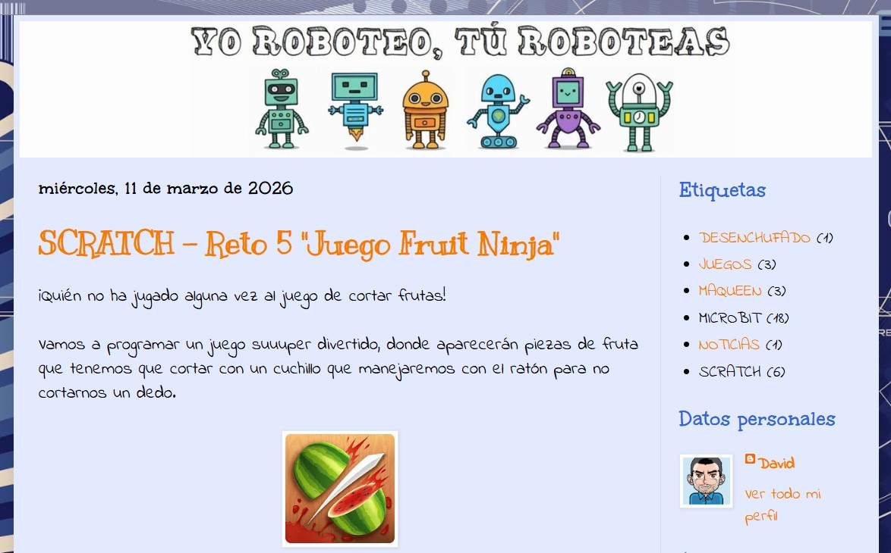

¿QUÉ HAY QUE HACER?
El producto final de mi SDA será la realización de un juego que el alumnado programará en Scratch, por lo que la herramienta digital más importante con la que vamos a trabajar será la propia plataforma digital.
Actualmente nos encontramos trabajando programación, pensamiento computacional, a través de Scratch, plataforma online gratuita para aprender programación por bloques, donde en lugar de escribir código, el alumnado usa bloques de colores que encajan como piezas de lego, realizando cada pieza una función específica.
Los beneficios de usar este herramienta digital son:
- Es fácil de usar pues no se necesita saber escribir código, simplemente encajar piezas una sobre otra como piezas de lego.
- Desarrollo del pensamiento lógico.
- Es ideal para principiantes y en cortas edades.
- Es un aprendizaje muy divertido.
Ya son dos cursos lo que me encuentro formando al alumnado de tercer ciclo de mi centro y este alumnado en concreto, alumnado de sexto, posee el nivel suficiente para realizar tareas como la que les propongo en esta SDA, de manera dirigida en algunos momentos complicados. Es por ello que el nivel de competencia digital es muy adecuado para las tareas que se les propondrán realizar.
Además de la propia plataforma, nos serviremos en el aula de nuestro blog de robótica que se llama “YO ROBOTEO, TÚ ROBOTEAS”, donde se van colgando retos que son los que el alumnado tiene que superar. Es un blog que pertenece a blogger, de la compañía Google. Les dejo por aquí la dirección por si hubiera alguien interesado en la temática y quiere utilizar la información que ya hay en ella, pues tienen mi consentimiento.
https://yoroboteo.blogspot.com/
Para comprobar la realización de las tareas propuestas, simplemente nos valdremos de la observación directa en cada portátil del alumnado, que todo el programa funciona correctamente. En algún caso, nos podríamos valer también del envío del programa creado por el alumnado, descargado el archivo y enviado a través de algún correo electrónico, a ser posible Moodle o Gsuite.
Decir que el centro dispone de una PDI en cada aula además de una carro con portátiles para el alumnado, un dispositivo para cada alumno/a. Por ello, queda constancia que la disponibilidad de los recursos digitales que ofrece el centro serán suficientes para el normal desarrollo.
